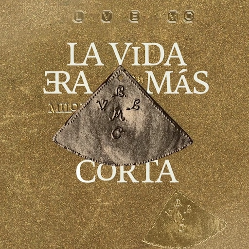

Camilo Villarruel, o más conocido como Milo J, ha sido consagrado desde que decidió hacer un giro musical en su carrera: del trap al folklore. Como consecuencia, nació su disco La vida era más corta, que terminó por consagrar al artista de tan solo 19 años. En el siguiente texto, se abordará su recorrido artístico y el impacto cultural sobre la música latinoamericana.
Sus comienzos, desde Morón al mundo
Milo J nació y creció en Morón, provincia de Buenos Aires, donde comenzó a subir sus primeras canciones a plataformas digitales siendo apenas un adolescente. Su estilo inicial, marcado por el trap, le permitió ganar un público joven que lo siguió de cerca en cada lanzamiento.
Desde sus primeros años comenzó a destacarse por sus letras y por una manera particular de interpretar sus canciones. Poco a poco, sus temas comenzaron a alcanzar millones de reproducciones y su nombre empezó a ser reconocido dentro de la escena urbana argentina.
La evolución musical
Con el correr de los años, el artista decidió sumar elementos del folklore argentino a su música, como así también otros estilos latinoamericanos, fusionando géneros urbanos con sonidos tradicionales. Este cambio no solo dejó boquiabierta a la crítica, sino que también abrió las puertas a un público mucho más amplio y diverso.
La vida era más corta, el disco que marcó un antes y un después
El último trabajo discográfico de Milo J fue una apuesta muy fuerte para el artista, el cual evidencia un giro radical en cuanto a sus estilos musicales. En este proyecto aparecen sonidos relacionados con las raíces musicales argentinas y una propuesta diferente a sus primeros trabajos.

Impacto cultural en la música latinoamericana
El éxito de La vida era más corta traspasó los límites argentinos, generando repercusión en diversos países de Latinoamérica, incluso del mundo como España y Estados Unidos, entre otros.
Su propuesta generó un debate sobre la unión de géneros y posicionó al folklore como una fuente de inspiración para nuevas generaciones de artistas urbanos. A su vez, ha sumado nuevos seguidores, un público muy difícil de conquistar, como lo es el público adulto.
La importancia de mezclar géneros
La combinación entre música urbana y sonidos tradicionales demuestra que diferentes generaciones y estilos musicales pueden encontrarse en una misma propuesta artística. Esta mezcla también permite que las nuevas generaciones conozcan y se acerquen al folklore argentino.
Música de Milo J
Si querés conocer más sobre la música de Milo J, podés escuchar algunos de sus trabajos y visitar sus plataformas oficiales.
Escuchá sus canciones
Escuchar el álbum La vida era más corta en YouTube